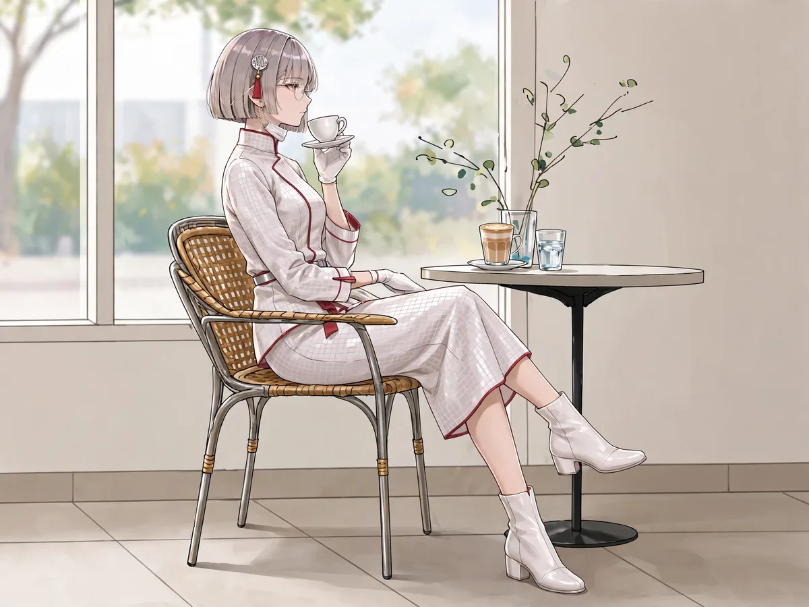

TSMC Visual Literacy Series · Part III — Visual Semantics and Pragmatics
The TSMC Storytelling Course
One character. Many meanings.
Part I changed the style and kept the pose. Part II kept the style and changed one visual decision at a time. This course runs the experiment in the other direction: start from an intended meaning — loneliness, authority, suspense, hope — and choose the visual decisions that carry it. The character, the café and the neutral rendering stay fixed; what changes is what the picture says: a brow, a gesture, a prop, a caption.
Controls first
Every group is anchored to one of six control images (right and below). Compare against the control: whatever changed is the meaning being taught.
Meanings are not rules
A symbol means what its culture and context let it mean. Groups name an intended reading and an alternative — and Lesson 25 shows intended and perceived meanings coming apart.
Quiz mode
Turn on Quiz mode (top bar) to hide names and meanings. Interpret the plates first, then reveal — ambiguous cases are never scored as right or wrong.
Loading coverage…

A note on the pictures: every image in this course is an AI-generated study of a fictional character, made to demonstrate one meaning at a time. Intended meanings are prompts, not scientifically proven audience responses — the final lesson is about exactly that gap. One sequence frame (Lesson 18, “Initial”) is published with its deviation noted on the plate: the generator never rendered the elbow-to-cup contact itself, so the frame shows the moment just after — and the lesson copy says so.
No plates match that search. Try a meaning (“suspense”), a cue (“smile”) or a prop (“envelope”).